Reinventing the digital signage platform for RXD,
laboratory, and science functions.
During Johnson & Johnson Design Studio's 10-week
professional program, our collaborative intern
project was to consider how we might utilize digital
signage to create a more connected, communicative,
and joyful workplace environment while creating a
fluid user-experience for both our target audience
and the designers and content strategists on the
back-end.
overview
Our intern cohort was tasked to leverage digital
signage to create a more connected and joyful
workplace environment while considering hybrid
workplace models; create and curate a smooth
user-experience and a content creation and
management strategy for the back-end; and create a
cohesive platform relevant across all US sites. Our
team was responsible for solving this problem for
lab, research, and RXD functions.
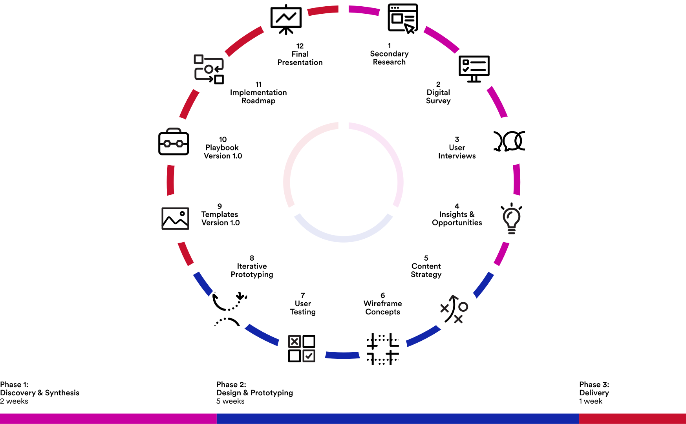
secondary research
For our research phase, we conducted both secondary
and primary research. Our secondary research
consisted of desk research and analogous case
studies of Korbyt, the digital signage platform that
would be used, and other similar content management
systems. I created a system to organize the types of
sources for desk research in our shared Notion,
which included analogous cases for reference,
relevant research, and the psychology of signage and
reading signage.
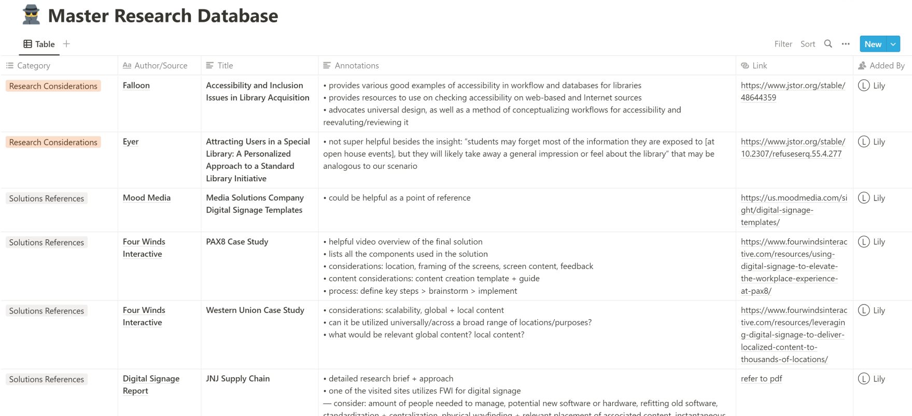
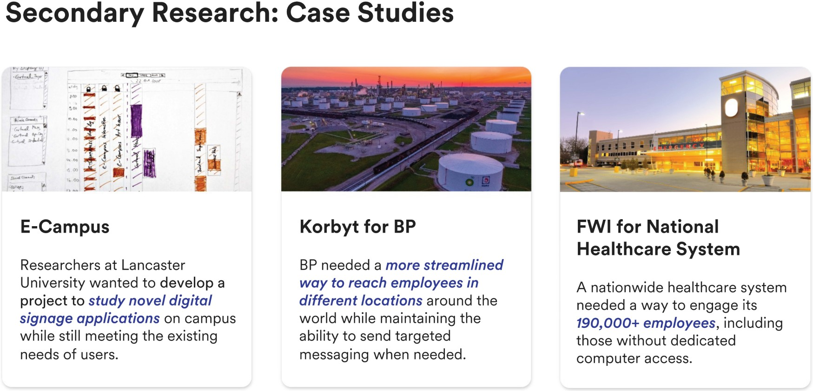
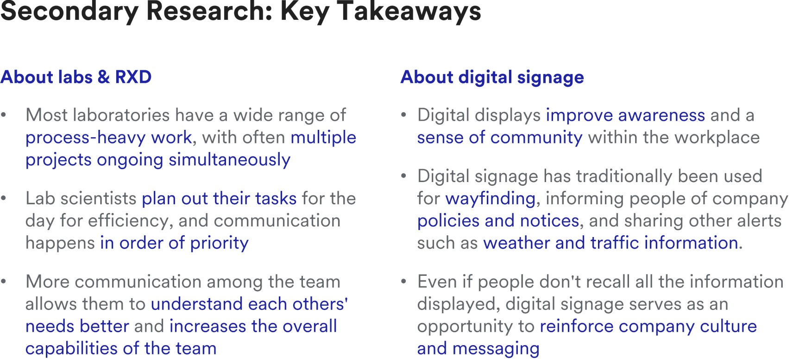
primary research
Our primary research consisted of surveys and user
interviews of both employees in R&D/science
functions and content managers/strategists for
Johnson & Johnson's current digital signage systems.
We then affinity mapped all our research in Mural
and generated insights based on our research, which
then led us to our user archetypes and how-might-we
opportunities.
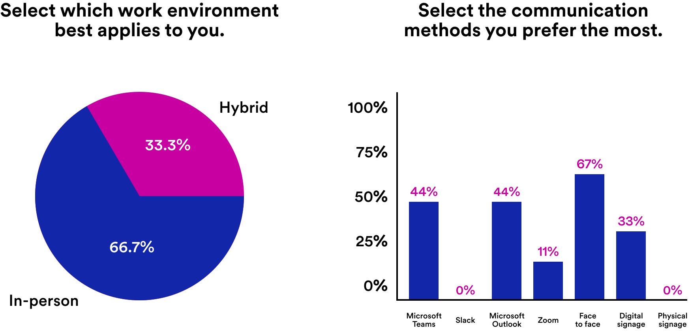
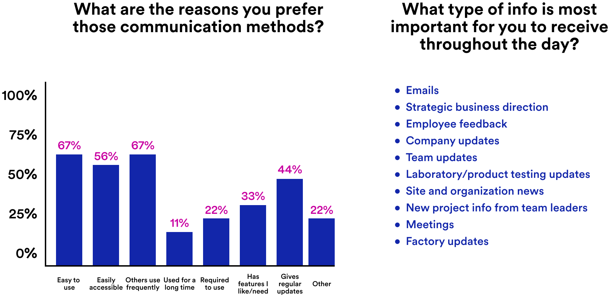
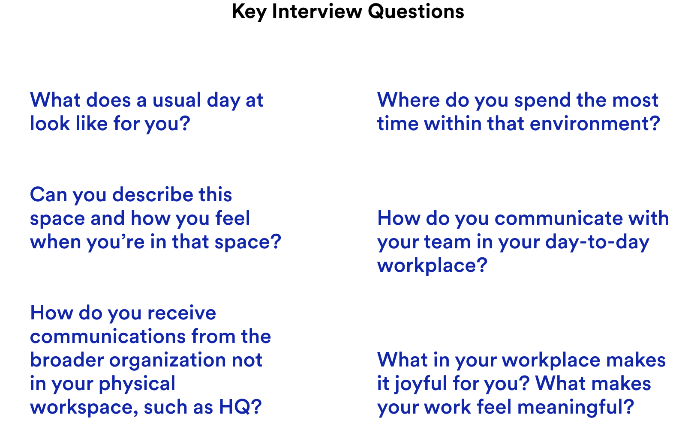
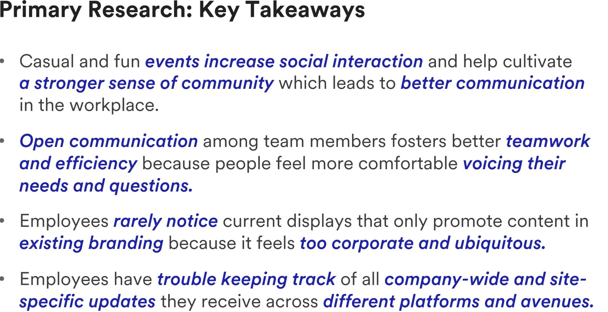
insights
We affinity mapped and synthesized all our research
in Mural and generated insights based on our
research, which then led us to our user archetypes
and how-might-we opportunities.
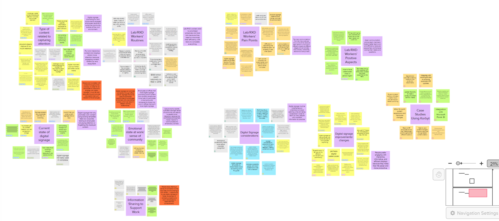
user archetypes
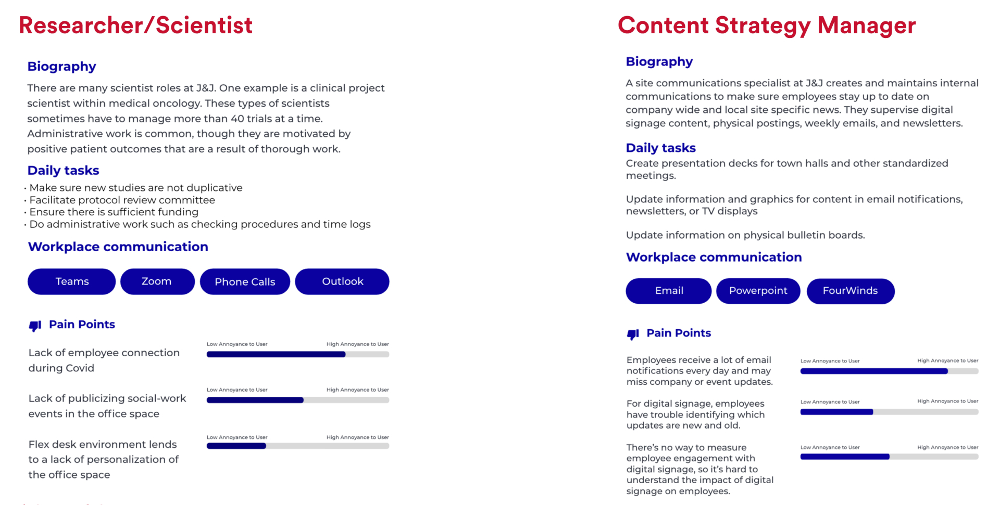
content strategy
In our designing and prototyping phase, we began
with a content strategy, dividing content into
buckets and organizing it based on global and local
communications. Since a lot of our research findings
indicated the types of communication employees
received that were important and meaningful were
able to be categorized, we did so for the ease of
the content manager who would be curating and
delivering this news.
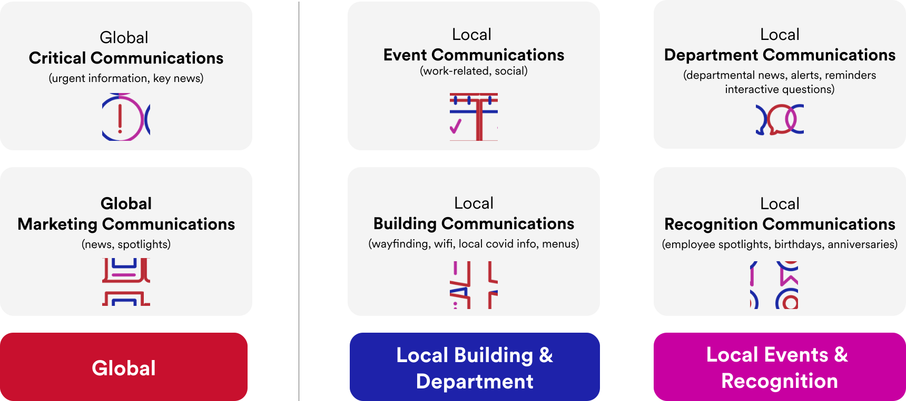
wireframing
We then designed initial wireframes using our
content strategy, dividing and organizing layouts
between global and local communications, and mocked
up a few key screens for user testing and feedback.
I proposed an addition to Johnson & Johnson’s
current brand identity to introduce the idea of
shape language and rounded shapes as a way to soften
the overall corporate feel and bring some more joy
and playfulness visually.
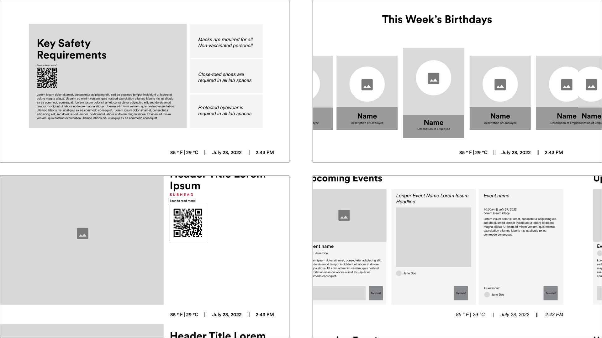
user testing
We conducted two rounds of user testing through
Zoom, improving based on feedback after both rounds,
with both content managers and lab/science/RXD
employees.
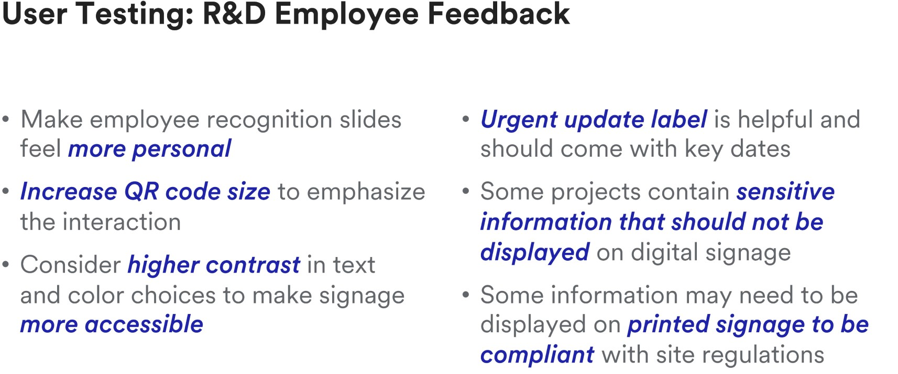
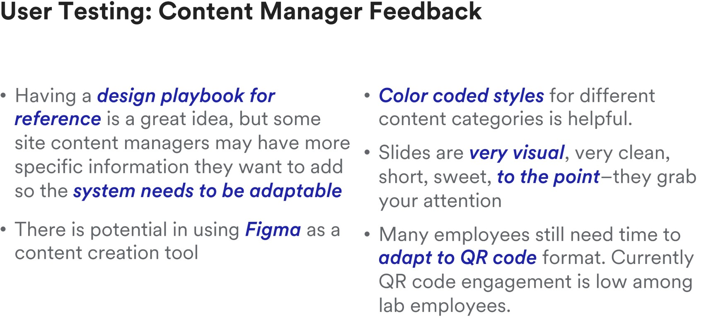
final solution
Our final solution consisted of refined content
templates within Figma for content managers to
utilize, as well as visual indicators and
instructions of how the templates should be
integrated with Korbyt’s functions. Along with the
templates themselves, examples of populated screens
and a library of assets and custom typefaces were
also there for ease of use. I also created a
playbook that provides guidance on the brand
guidelines, content strategy, and hierarchy of the
templates, along with the basics of navigating
through Figma. We felt that Figma was the best space
for the templates and playbook to live in so it
could continue to evolve and change with the
company's guidelines and endeavors as needed.
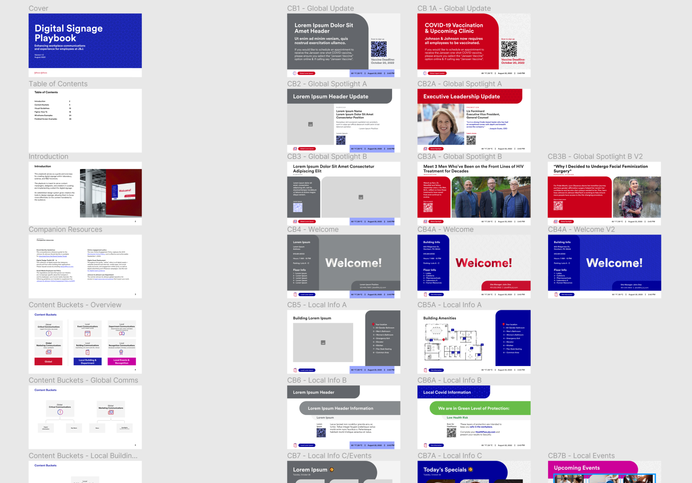
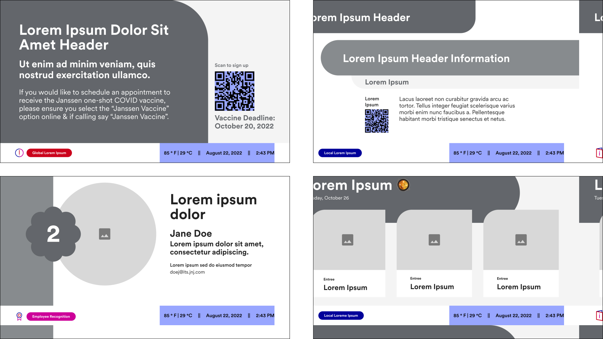
playbook
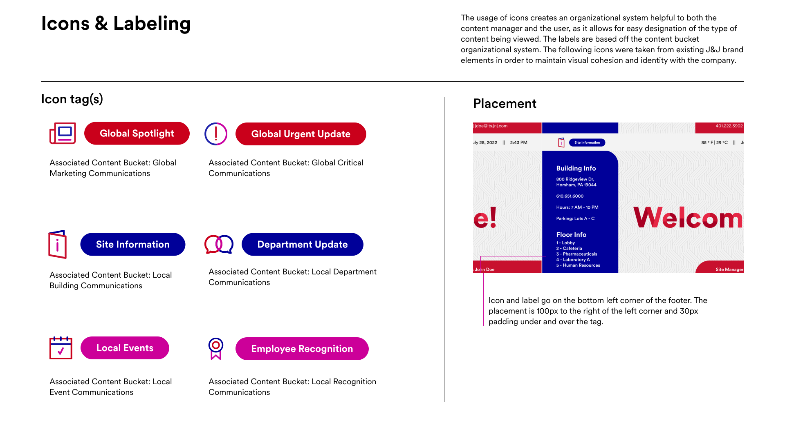
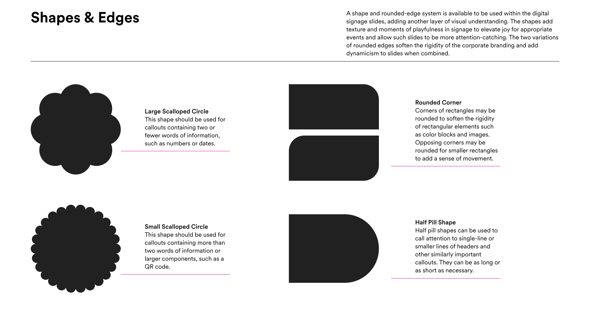
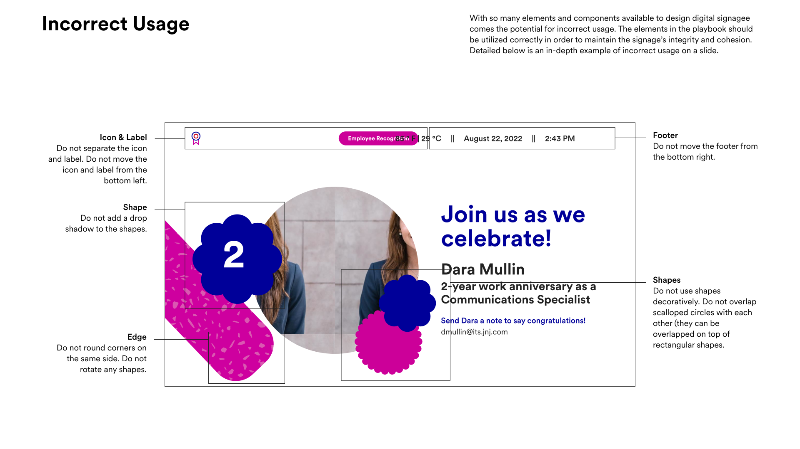
reflection
Going into this project was very daunting, as it was
a project with a scope completely unfamiliar to me.
I’ve mostly been used to digital solutions being for
web or mobile applications, and I knew almost
nothing about laboratory or research functions.
However, I felt that being in a team was really
helpful, as even though none of us had in-depth
knowledge, we were able to work at building our
knowledge with different perspectives and
encouraging each other, which made the project much
less daunting.
Looking back, if we were able to, it would have
helped our project a lot to actually visit some of
the sites and perhaps shadow some of the researchers
in their day-to-day. With more time, I would have
also suggested testing the displays within the
Johnson & Johnson Design building for a few days to
gather observational data and user feedback
physically. Overall, my team and I are proud of what
we were able to accomplish in a short of amount of
time, especially considering we all had other main
duties to take care of during our internship.